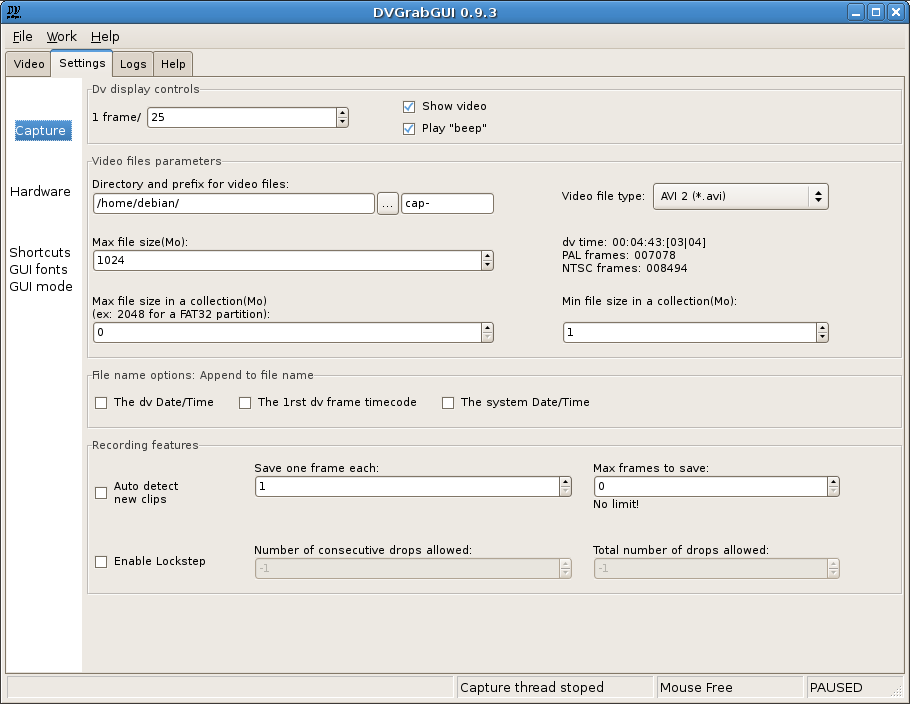

Prev: Reference → Video Window ("Small" mode) --- ↑Home --- Next: Reference → Settings → Hardware
DVGrabGUI 0.9.4
Reference → Settings → Capture
This tab allows you to set options about the capture itself. Probably the
most used one!

-
Dv display controls:
This box regroups the dv display settings in the video window:
-
1 frame/
Show a dv frame each n frames received.
-
Show Video
Check box to activate or not this display. Disable it if you want
to save battery, or have "sigsev" problems (you should have the
same ones if trying to use the "jpeg" recording feature: there
are problems with your version of "libdv").
-
Play "beep"
Other check box to activate or not the "beep" sound while
recording.
-
Video files parameters:
This box regroups the main video file settings.
-
Directory and prefix for vidéo files
To set, first the path where to write video files, then the first
part of the video files names (completed by an optional date/time
value, a number and the file extension, chosen by the choice
control at right).
The "…" button opens a dialog box to chose the
base directory for the video files.
-
Video file type
This choice box allows you to select the format of the video files:
-
AVI 1 – AVI container, no "openDML" (big files) available,
no double-store of audio data;
-
AVI 2 – Default choice. AVI container, with
"openDML" (big files), but double-store of audio data
(little loss of space…);
-
Raw (*.dv, *.dif) – Record dv stream "as is",
without encapsulating it in a container;
-
Jpeg – Record dv stream as a sequence of jpeg images.
Note that this may not be present, if libjpeg wasn't
discovered at building time. Note too that you shouldn't
try to record every dv frame: you should rather record at
most one frame each two, or each three…
-
Max file size:
The maximum file size, in Mo. If set to "0", there is no limit!
-
Static text
This info text shows you the record time, and the max number of
frames in PAL and NTSC, allowed by the previous "Max file size"
setting (it varies depending on the format chosen – for
Jpeg images, it is the worst case – full
noise! – for the normal definition: in general,
you will be able to store at least as much jpeg images as dv
frames recordable by other formats…).
-
Max file size in a collection
If >0, creates collections of files of this size (in Mo). Useful
if you want to write these files on CDs (!), DVDs, or are using
a FAT partition, …
-
Min file size in a collection
To be sure that you won't have files smaller than this value (in
Mo) in your collection!
-
File names options:
You can append the following time data to your file names:
-
The dv Date/Time
Append the Date/Time recorded on the dv tape.
-
The 1rst dv frame timecode
Append the timecode of the first frame recorded.
-
The system Date/Time
Append the OS date/time when capture started.
-
Recording features:
More options to control the recording.
-
Auto detect new clips
Try to create a new file for each dv clip (detected by dv stream
meta-data, or discontinuity in timecode).
-
Save one frame each
Save only one frame each n frames received.
-
Max frames to save
The maximum number of frames stored before halting the capture.
The text below gives you info of corresponding time in PAL
(25fps) and NTSC (30fps). If set to "0", there is no limit!
Note that the shorter between this setting and the
"Max file size" one wins!
-
Enable Lockstep
Enable this to stop dv recording if there are too much frames
dropped during capture (see the two other settings below). Note
that DVGrabGUI repeats the last complete frame received to
replace the dropped ones…
-
Number of consecutive drops allowed
This is the number of consecutive frames dropped (not received,
or incomplete) that DVGrabGUI will replace with the last good
one, before it stops the capture. If set to "-1", there is no
limit!
-
Total number of drops allowed
This is the maximum number of drops allowed during a capture,
before DVGrabGUI stops the capture. As above, if set to "-1",
there is no limit!
Prev: Reference → Video Window ("Small" mode) --- ↑Home --- Next: Reference → Settings → Hardware
(c) 2006, 2007, 2008 Bastien Montagne (montagne29 at wanadoo dot fr).
Project hosted at sourceforge.net/projects/dvgrabgui.